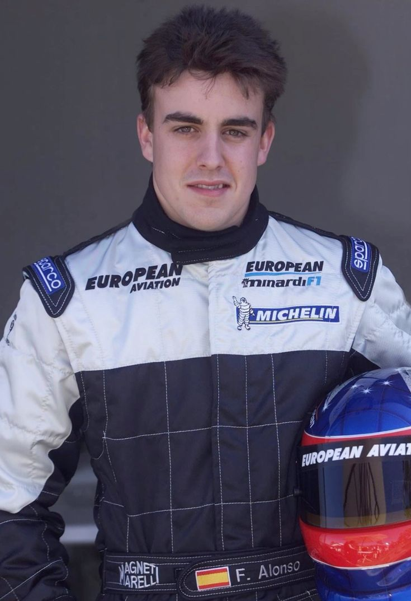
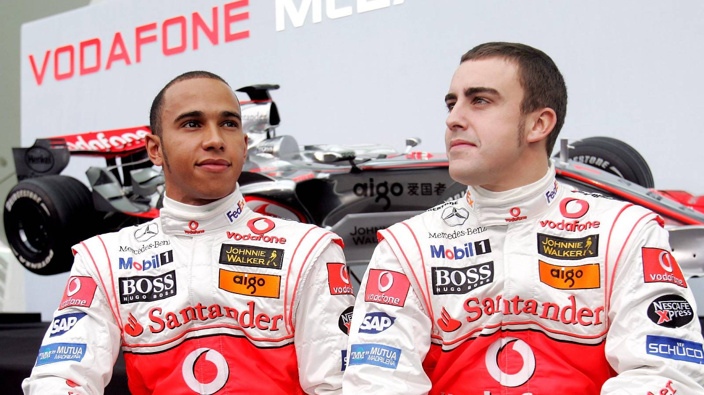
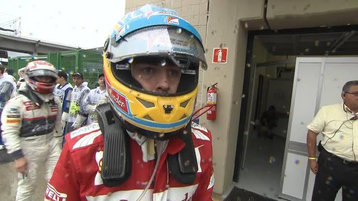
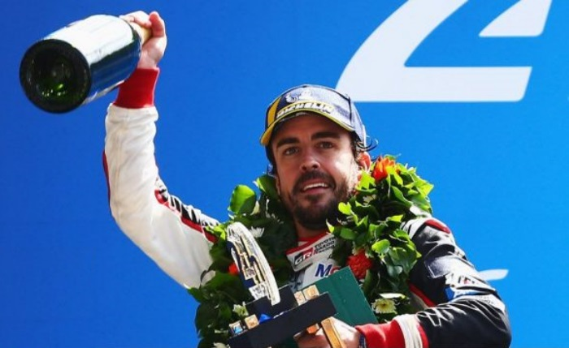
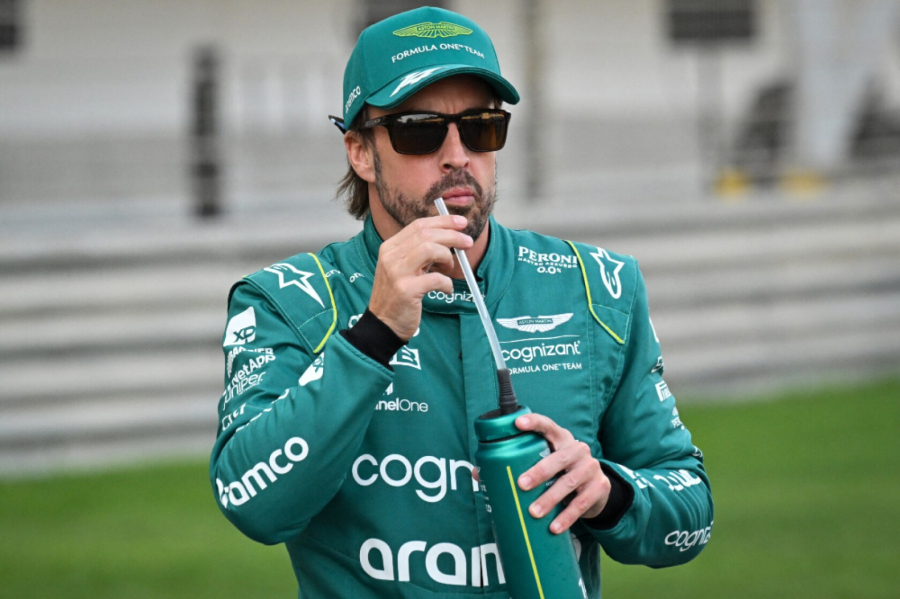

Trajetória:
🚩 Início Promissor (2001 - 2004)

Alonso veio de uma família humilde na Espanha. Diferente de Hamilton, que teve o apoio da McLaren desde cedo, Alonso teve que lutar em categorias menores até ser notado por Flavio Briatore.
- Estreia: Começou na nanica Minardi em 2001, onde já impressionava ao classificar o carro muito acima de sua capacidade real.
- Chegada à Renault: Após um ano como testador, assumiu a vaga de titular em 2003 e tornou-se, na época, o piloto mais jovem a vencer um GP (Hungria).
🏆 O "Exterminador" de Schumacher (2005 - 2006)

Este é o auge estatístico de Alonso. Ele foi o responsável por encerrar a era de domínio absoluto de Michael Schumacher e da Ferrari.
- Bicampeonato (2005-2006): Com a Renault, Alonso mostrou uma consistência absurda. Ele não era apenas rápido, mas um mestre em gerenciar corridas e pneus. Aos 24 anos, tornou-se o mais jovem campeão da história na época
🌪️ O Ano Caótico na McLaren (2007)

Alonso mudou-se para a McLaren em 2007 para defender seu título. O que ele não esperava era que seu companheiro de equipe, um estreante chamado Lewis Hamilton, fosse tão rápido.
- Rivalidade Interna: A temporada foi marcada por uma guerra fria entre os dois, com a equipe dividida e um carro que não era competitivo o suficiente para ambos. Alonso terminou em 3º, atrás de Hamilton e Kimi Raikkonen. A rivalidade interna implodiu a equipe. Alonso sentiu que não tinha a prioridade que um bicampeão merecia, e a tensão culminou no escândalo de espionagem ("Spygate"). Ele saiu da equipe após apenas uma temporada.
🐎 Os Anos de "Quase" na Ferrari (2010 - 2014)

Alonso foi para a Ferrari com a missão de devolver os títulos a Maranello. Foram anos de performances heróicas, mas de muita frustração técnica.
- Vice-campeonatos: Ele perdeu os títulos de 2010 e 2012 na última corrida para Sebastian Vettel. Em 2012, especialmente, ele guiou uma Ferrari visivelmente inferior e quase operou um milagre. Ele saiu da equipe no fim de 2014, desgastado pela falta de um carro vencedor.
🏎️ O Hiato e a Busca pela "Tríplice Coroa" (2015 - 2020)

Após uma segunda passagem desastrosa pela McLaren (marcada pelos motores Honda pouco confiáveis), Alonso se aposentou da F1 em 2018 para buscar outros desafios.
- Le Mans e WEC: Le Mans: Venceu as 24 Horas de Le Mans duas vezes (2018 e 2019) e conquistou o Campeonato Mundial de Endurance (WEC) em 2019.
- Daytona: Venceu as 24 Horas de Daytona em 2019.
- Indy 500: Tentou vencer em Indianápolis para completar a Tríplice Coroa (Mônaco, Le Mans e Indy), mas o motor quebrou em 2017 quando ele liderava.
🔄 O Retorno e a Longevidade (2021 - 2026)

Alonso voltou à F1 em 2021 com a Alpine e, em 2023, mudou-se para a Aston Martin, onde viveu um "renascimento" com vários pódios no início da temporada.
- O Piloto Mais Experiente: Em 2026, ele continua no grid com mais de 44 anos, quebrando recordes de longevidade.
- Futuro: Recentemente, ele renovou com a Aston Martin até 2026, apostando na parceria da equipe com a Honda e na chegada do projetista Adrian Newey para tentar buscar a tão sonhada vitória número 33.